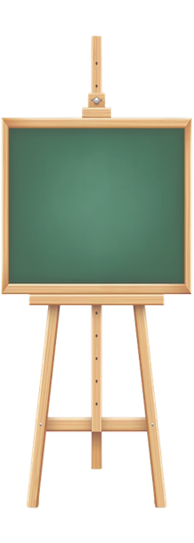

Please use a browser that supports "canvas"
Clear Canvas
Canvas Color:
Shape Selections:
Color Adjustment:
Red
Green
Blue
Opacity
Size and Circle Options:
Size
(Circles) Segment Count
Let Them Eat Cake:
üç∞
üñºÔ∏è